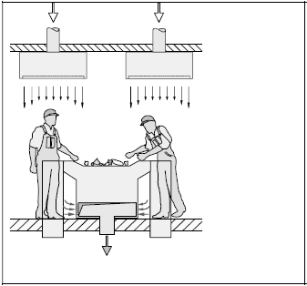
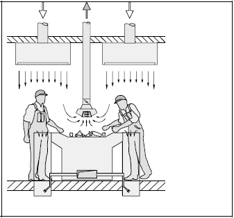

(1) Die in den nachfolgenden Abschnitten für einzelne Arbeits- und Anlagenbereiche aufgeführten Schutzmaßnahmen sind entsprechend der in § 8 Absatz 4 BioStoffV beschriebenen Rangfolge untergliedert:
(2) Grundsätzlich sind die in dieser TRBA beschriebenen baulichen und technischen Maßnahmen bei konsequenter Durchführung und Instandhaltung der Gebäude und Anlagen effektive Instrumente zur Minimierung der Konzentration von Biostoffen in der Luft am Arbeitsplatz. Zwingend ist jedoch zusätzlich die konsequente Einhaltung der organisatorischen Maßnahmen, insbesondere der Hygienemaßnahmen, um das erforderliche Arbeitsschutzniveau aufrecht zu erhalten. Erst wenn technische und organisatorische Maßnahmen den Schutz der Beschäftigten nicht in ausreichendem Maße gewährleisten können, ist geeignete persönliche Schutzausrüstung zu tragen.
(3) Das Minimierungsgebot der Biostoffverordnung gilt unabhängig von der festgelegten Höhe des technischen Kontrollwertes (TKW) nach Abschnitt 5.1 dieser TRBA.
(1) Grundsätzlich ist der Betriebsablauf so zu gestalten, dass in Bereichen, in denen Gefährdungen durch Biostoffe auftreten oder zu erwarten sind, wie z.B. Anlieferung, Materialaufbereitung, Rotte und Nachrotte etc., keine ständigen Arbeitsplätze bestehen. Der Zugang zu diesen Bereichen ist auf das betrieblich erforderliche Mindestmaß zu beschränken. Bei erforderlichen Arbeiten in diesen Bereichen sind geeignete persönliche Schutzausrüstungen zu tragen (vgl. Abschnitt 4.12). Ständige Arbeitsplätze dürfen nur in Kabinen und Steuerständen nach Abschnitt 4.4 oder in Sortierkabinen nach Abschnitt 4.6 eingerichtet werden.
(2) Die Bereiche Anlieferung, Behandlung/Sortierung und Zwischenlager sind möglichst in baulich abgetrennten Bereichen zu installieren.
(3) Eine manuelle Sortierung von Abfällen ist zu vermeiden. Sofern dies nicht vollständig möglich ist, muss der Anteil manueller Sortiertätigkeiten minimiert werden.
(4) Die manuelle Sortierung von Abfallproben im Sinne einer Sortieranalyse gemäß Abschnitt 2.3 ist räumlich oder lüftungstechnisch von allen sonstigen Bereichen zu trennen, da von diesen eine Belastung durch luftgetragene Biostoffe ausgehen kann. Bevorzugt sollen Sortierkabinen, die gemäß Abschnitt 4.6 ausgestattet sind, genutzt werden.
(5) Die manuelle Sortierung von Abfällen außerhalb von Abfallsortieranlagen gemäß Abschnitt 2.4 ist nur in Ausnahmefällen als kurzzeitige und vereinzelte Maßnahme zulässig, wenn dabei das Schutzniveau dieser TRBA sichergestellt ist. Die Anforderungen der Biostoffverordnung können bei fehlenden baulichen und technischen Gegebenheiten außerhalb der dafür vorgesehenen technischen Anlagen gemäß dieser TRBA (z. B. innerhalb von Wohnanlagen) in der Regel nicht erfüllt werden.
(6) Der Arbeitgeber hat dafür Sorge zu tragen, dass durch Biostoffe, die aus zu behandelnden Abfällen freigesetzt werden, Beschäftigte an benachbarten Arbeitsplätzen nicht gefährdet werden. Ist eine Beeinflussung anderer Arbeitsplätze technologiebedingt nicht auszuschließen, müssen die Belastungen durch Biostoffe so gering wie möglich gehalten werden.
(7) Mobile Maschinen (z. B. Siebe, Zerkleinerungsaggregate) sind so auszurüsten und Stellplätze so einzurichten, dass mögliche Gefährdungen für Beschäftigte, z. B. durch Verschleppung von Biostoffen in Windrichtung, minimiert werden.
(8) Fahrzeugkabinen und Steuerstände von Maschinen und Anlagen, sowie Einrichtungen in Bereichen, in denen mit Belastungen durch Biostoffe aus den zu behandelnden Abfällen zu rechnen ist, müssen so belüftet sein, dass die Gefährdung der Beschäftigten minimiert ist (siehe Abschnitt 4.4).
(9) Technische Einrichtungen, wie z. B. maschinelle Siebe, Abscheider, Sichter, Förderer und Pressen sind so zu gestalten und zu betreiben, dass Belastungen durch Biostoffe dem Stand der Technik entsprechend gering gehalten werden.
(10) Anlagen müssen regelmäßig sowie bei Bedarf gereinigt werden. Da die Nachhaltigkeit vereinzelter Reinigungsmaßnahmen durch den kontinuierlichen Materialdurchsatz begrenzt ist, ist ein konsequent durchgeführtes Reinigungsmanagement notwendig. Dazu ist die Aufstellung eines Reinigungs- und Hygieneplans mit festgelegten Reinigungsintervallen erforderlich. Seine Einhaltung ist schriftlich zu dokumentieren. Eine Übersicht über die in dieser TRBA geforderten Reinigungsintervalle ist in Anlage 1 zu finden.
Dabei sind folgende Grundsätze zu beachten:
(11) An Arbeitsplätzen und in belasteten Bereichen sind die Aufbewahrung und der Konsum von Getränken, Speisen, Tabakerzeugnissen und sonstigen Genussmitteln sowie der Gebrauch von Medikamenten oder Kosmetika verboten (siehe auch Abschnitt 4.11.2 Absatz 1).
(12) Gemäß § 14 Absatz 1 der BioStoffV sind Betriebsanweisungen zu erstellen, in denen insbesondere folgende Punkte zu berücksichtigen sind:
Hinweise und Beispiele für die Erstellung von Betriebsanweisungen finden sich in der DGUV-Information 213-016 "Betriebsanweisungen nach der Biostoffverordnung" [15].
(13) Die Beschäftigten, einschließlich der Mitarbeiter von Fremdfirmen und Leiharbeitnehmer (siehe Abschnitt 3.1 Absatz 4), sind über die möglichen Gefährdungen durch Biostoffe und die festgelegten Schutzmaßnahmen auf der Grundlage der Betriebsanweisung und des Reinigungs- und Hygieneplans in der für sie verständlichen Sprache zu unterweisen (§ 14 Absätze 2 und 3 BioStoffV). Dies hat vor Beginn der Tätigkeiten und danach in regelmäßigen Abständen, mindestens jährlich und darüber hinaus bei maßgeblichen Änderungen der Tätigkeiten in mündlicher Weise und arbeitsplatzbezogen zu geschehen. Die Unterweisung soll auch eine allgemeine arbeitsmedizinische Beratung enthalten und so gestaltet sein, dass das Sicherheitsbewusstsein der Beschäftigten hinsichtlich biologischer Gefährdungen gestärkt wird.
(14) Im Rahmen der Unterweisung nach Absatz (13) hat eine allgemeine arbeitsmedizinische Beratung der Beschäftigten zu erfolgen. Dabei ist der bestellte Betriebsarzt bzw. der mit der Durchführung der arbeitsmedizinischen Vorsorge beauftragte Arzt einzubeziehen (vgl. AMR 3.2). Eine Beteiligung ist z.B. auch durch die Schulung der Personen, die die Unterweisung durchführen, oder durch die Mitwirkung bei der Erarbeitung von Unterweisungsmaterialien gegeben.
| a) | die Möglichkeit von Sensibilisierungen und allergischen Erkrankungen durch schimmelpilzhaltige Stäube sowie die entsprechenden Symptome wie
|
||||||||
| b) | die möglichen gesundheitlichen Risiken, die insbesondere eine familiäre Prädisposition zur Allergieentstehung oder eine bereits bestehende allergische Erkrankung (z.B. Heuschnupfen, allergisches Asthma, chronische Atemwegs-/Lungenerkrankungen) sowie vorliegende Infekte (z.B. Erkältungen) haben können und die Möglichkeiten, die in einem solchen Fall bestehen (z.B. Hinweis auf Wunschvorsorge oder Tätigkeitsanpassung), | ||||||||
| c) | die konkreten Tätigkeiten, bei denen persönliche Schutzausrüstungen zu tragen sind sowie die Anleitung zu deren Handhabung. Die Notwendigkeit der Maßnahmen soll erläutert werden, um die Akzeptanz zu gewinnen, | ||||||||
| d) | soweit relevant die Problematik von Feuchtarbeit einschließlich der Hautschutz- und Hautpflegemaßnahmen. |
| a) | Ursache und Herkunft (Endotoxine, Mykotoxine, Glucane), |
| b) | Symptome (unspezifische Beschwerden der Schleimhäute, der Atemwege, des Verdauungstraktes, und grippeähnliche Symptome – Organic dust toxic syndrome (ODTS)). |
| a) | deren Vorkommen (zum Beispiel Hepatitis-B-Viren in gebrauchten Spritzen mit Blutresten, Hantaviren, Leptospiren bei Vorkommen von Ratten, Psittacose-Erreger bei Vögeln), |
| b) | deren Übertragungswege, |
| c) | Krankheitsbilder, |
| d) | das evtl. erhöhte individuelle Erkrankungsrisiko bei verminderter Immunabwehr, |
| e) | die Sofortmaßnahmen und Maßnahmen der postexpositionellen Prophylaxe sowie das weitere Vorgehen entsprechend aktueller Empfehlungen im Hinblick auf Schnitt- oder Stichverletzungen (z.B. an einer kontaminierten Kanüle), |
| f) | über die Möglichkeit von Schmier- und Kontaktinfektionen von kontaminierter Kleidung auf vermeintlich saubere Hände bzw. vermeintlich saubere Flächen. |
(15) In der allgemeinen arbeitsmedizinischen Beratung sollen die Beschäftigten über die auf der Basis der Gefährdungsbeurteilung festgelegte arbeitsmedizinische Vorsorge und ggf. mögliche Impfungen informiert werden. Zudem ist auf die erforderliche arbeitsmedizinische Pflicht- und Angebotsvorsorge hinzuweisen, sowie auf das Recht, beim Auftreten einer möglicherweise tätigkeitsbedingten Erkrankung eine Angebotsvorsorge nach § 5 Absatz 2 ArbMedVV wahrzunehmen [27].
(16) Die Beschäftigten sind darüber hinaus zu informieren und zu beraten über:
(17) Der Arbeitgeber hat dafür Sorge zu tragen, dass geeignete körperbedeckende Schutzkleidung zur Verfügung gestellt wird, die von ihm regelmäßig und bei Bedarf gereinigt (z.B. bei starker Verschmutzung oder Durchnässung) und instandgehalten wird. Der Wechselrhythmus darf nicht länger als eine Arbeitswoche betragen (vgl. Abschnitt 4.12).
(18) Bei allen Tätigkeiten, die einen direkten Kontakt mit Biostoffen bedingen, sind ausgehend von der Gefährdungsbeurteilung, persönliche Schutzausrüstungen (PSA) nach Abschnitt 4.12 zu benutzen. Direkter Umgang mit Biostoffen kann z.B. auch bestehen bei Probenahmen, Qualitätskontrollen und Temperaturmessungen.
(19) Insbesondere bei Reinigungs- und Instandhaltungsarbeiten, bei denen durch unvermeidbare Staubaufwirbelung mikrobiell belastete Aerosole entstehen (z.B. beim Filterwechsel, bei Instandhaltungs- und Reinigungsarbeiten z. B. im Müllbunker, oder bei Kontakt zu Ausscheidungen von Tieren), ist geeigneter Atemschutz (Abschnitt 4.12 Absatz 2) zu tragen. Bei diesen Arbeiten ist das Tragen von Kopfbedeckungen aus hygienischen Gründen sinnvoll.
(1) Der Anlieferungsbereich soll klar gegliedert sein. Er ist möglichst so zu gestalten, dass angeliefertes Material, das nicht sofort verarbeitet wird, baulich getrennt gelagert und über Fördereinrichtungen dem Behandlungsprozess zugeführt werden kann.
(2) In eingehausten Anlieferungsbereichen ist für eine wirksame Lüftung zu sorgen. Ist dies in Form einer natürlichen Lüftung, z. B. durch geeignete Anordnung von Toren und Dachluken, nicht möglich, ist eine technische Lüftung zu errichten. Es ist zu vermeiden, dass kontaminierte Luftströme in Arbeitsbereiche gelangen.
(3) In Abfallverbrennungsanlagen ist der Anlieferungsbereich möglichst so zu gestalten, dass eine ständige Absaugung über den Bunker, z. B. durch die Verbrennungsluftgebläse der Kessel gewährleistet ist.
(4) Anlieferungsbereiche für flüssige und pastöse biologische Abfälle z. B. in Vergärungsanlagen sind so zu gestalten, dass eine Aerosolbildung vermieden wird. Dies kann beispielsweise dadurch erreicht werden, dass flüssige Abfälle nicht offen, sondern über eine ankoppelbare Schlauchverbindung in einen geschlossenen Pufferbehälter abgelassen werden.
(5) Innerbetriebliche Verkehrswege zu Arbeitsplätzen sollen nicht durch den Anlieferungsbereich führen.
(6) Eventuell erforderliche Kontroll- oder Schutzräume am Anlieferungsbereich von Abfallverbrennungsanlagen müssen den Anforderungen von Abschnitt 4.4 entsprechen. Sie sollten darüber hinaus über eine Handwaschmöglichkeit verfügen.
Für das regelhafte Kippen von einzelnen Abfallsammelbehältern bis 1.100 Liter (zum Beispiel Lebensmittelabfälle) sind abgesaugte Automatikschüttungen geeignet. Sofern diese Abfallbehälter gereinigt werden, ist eine geeignete Anlage zu verwenden deren Bediener nicht gegenüber entweichenden Aerosolen exponiert werden.
(1) Der Betriebsablauf ist so zu organisieren, dass im Anlieferungsbereich keine ständigen Arbeitsplätze, wie z. B. für Einweiser und Vorsortierer ohne ausreichenden Schutz bestehen.
(2) Der Boden ist regelmäßig und bei Bedarf staubarm mit geeigneten Methoden (z. B. Kehrsaugmaschine, Nassreinigung) zu reinigen. Die erforderlichen Reinigungsmaßnahmen sind in den Reinigungs- und Hygieneplan einzubeziehen.
(3) Abfälle sind grundsätzlich arbeitstäglich der Behandlung zuzuführen. In begründeten Fällen ist die Zwischenlagerung der betroffenen Abfälle so zu organisieren, dass kein Lagerbereich mit längerer Verweilzeit entsteht. Begründete Fälle sind z. B. Tiefbunker in Müllverbrennungsanlagen, Betriebsstörungen im Anlagenprozess oder wenn in einer biologischen Abfallbehandlungsanlage zur Behandlung der betroffenen Abfallart eine bestimmte Abfallmenge angesammelt werden muss, z. B. Grünschnitt oder Wurzelhölzer.
(4) Es ist darauf zu achten, dass sich beim Abkippen keine Beschäftigten im Staubungsbereich aufhalten.
(5) Verunreinigtes Schuhwerk muss vor dem Betreten eines Kontrollraumes gereinigt werden.
(1) Kabinen und Steuerstände mit ständigem Arbeitsplatz müssen geschlossen sein und über eine klimatisierende Schutzbelüftungsanlage, eine raumlufttechnische Einrichtung (RLT-Anlage) oder eine gleichwertige Lösung verfügen. In der Müllkrankabine ist eine raumlufttechnische Einrichtung mit geringfügiger Überdruckhaltung zweckmäßig. Flurförderzeuge und Erdbaumaschinen, die über keine geschlossene, klimatisierte Kabine mit Schutzbelüftung nach DGUV-Information 201-004 [16] verfügen, dürfen in belasteten Bereichen oder in der Nähe von Emissionsquellen nur in Ausnahmefällen kurzzeitig eingesetzt werden. Den Mitarbeitern an diesen Arbeitsplätzen ist geeignete persönliche Schutzausrüstung (PSA, siehe Abschnitt 4.12) zur Verfügung zu stellen.
(2) Die Wirksamkeit der Funktion einer Schutzbelüftung oder Fremdbelüftung ist nur sichergestellt, wenn gleichzeitig Maßnahmen zur Reinhaltung der Kabinen und Steuerstände getroffen werden. Sie sollen daher im Inneren keine Räume aufweisen, in denen sich Staub oder Biostoffe schwer zugänglich ablagern können. Hohlräume sind ggf. vor der Inbetriebnahme auszufüllen oder zu versiegeln.
(3) Die Oberflächen im Innenraum von Kabinen und Steuerständen mit ständigem Arbeitsplatz sind so zu gestalten, dass sie leicht zu reinigen sind. Maschinen und Fahrzeuge mit Kabinen sind mit technischen Einrichtungen zur Verminderung der Kontamination der Trittstufe auszurüsten (z. B. Gitterroste oder perforierte Auftrittsbleche).
(1) Kabinen und Steuerstände sind nach jeder Arbeitsschicht zu reinigen.
(2) Filter von Schutzbelüftungsanlagen oder von raumlufttechnischen Einrichtungen sind entsprechend den Angaben des Herstellers regelmäßig zu warten und zu wechseln.
(3) Die Wirksamkeit der Schutzbelüftungsanlage muss vor der Inbetriebnahme und spätestens alle zwei Jahre geprüft werden (§ 8 Absatz 6 BioStoffV). Die Funktion ist regelmäßig zu überprüfen. Die Prüfungen sind zu dokumentieren. Auf die Anforderung, regelmäßig technische Prüfungen nach § 14 BetrSichV durchzuführen, wird hingewiesen.
(4) Ein Wartungs- und Reinigungsplan ist unter Berücksichtigung der Herstellerangaben zu erstellen und umzusetzen.
(5) Die Türen und Fenster der Fahrzeugkabinen sind während des Betriebes geschlossen zu halten. In Fahrerkabinen herrscht aus Gründen der Hygiene und des Brandschutzes grundsätzlich Rauchverbot. Das Ein- und Aussteigen im belasteten Bereich ist soweit wie möglich zu reduzieren.
(1) Die Störstoffauslese ist so zu gestalten, dass die manuelle Sortierung minimiert ist, z. B. durch den Einsatz von maschinellen Sortiereinrichtungen.
(2) An Zerkleinerungsaggregaten und Sacköffnungsautomaten ist die Luftbelastung durch die Aufwirbelung von Biostoffen möglichst gering zu halten (z. B. durch Einbau einer wirkungsvollen Absaugung).
(3) Maschinelle Sortiereinrichtungen (z. B. Siebe, Metallabscheider, Windsichter) sind soweit wie möglich zu kapseln, wenn sie in Hallen baulich umschlossen aufgestellt sind.
(4) Fallhöhen an den Übergabestellen der Transportbänder sind zu minimieren. Die Übergabestellen sollen mit Absaugeinrichtungen versehen sein. Die Kapselung von Transportbändern wird empfohlen.
(1) Der Abwurf der einzelnen Fraktionen der maschinellen Störstoffauslese soll in geschlossene Behältnisse (nach oben offene Sammelbunker oder Container) erfolgen. Eine lose Schüttung von den Bändern ist zu vermeiden.
(2) Bei ständigen Arbeitsplätzen im Bereich der Sichtung oder Vorsortierung ist der Schutz der Beschäftigten nach Abschnitt 4.6 oder durch vergleichbare Schutzmaßnahmen zu gewährleisten.
(1) Das manuelle Öffnen von Säcken (z. B. von Sortiergut für die Abfallsortierung) ist auszuschließen.
(2) Die Funktionsfähigkeit der Absaugungen ist arbeitstäglich zu kontrollieren.
(1) Für die Handsortierung ist ein gegenüber anderen Betriebsbereichen geschlossener, klimatisierter Arbeitsraum einzurichten. Durch die bauliche Abtrennung ist sicherzustellen, dass keine mit Biostoffen belastete Luft in die Sortierkabine einströmen kann. Bei der Auslegung und Dimensionierung der Sortierkabine sind lüftungstechnische Anforderungen zu berücksichtigen (siehe Abschnitt 4.6.2 Absatz 2).
(2) Die Arbeitsplätze in der Sortierkabine sollen erreichbar sein, ohne dass die Beschäftigten einer erhöhten Belastung durch Biostoffe (z. B. im Anlieferungsbereich) ausgesetzt sind.
(3) Die Sortierkabine und ihre Einrichtungen sind durch Gestaltung der Oberflächen und Auswahl geeigneter Materialien (z. B. nassreinigungsfähige Bodenbeläge wie Fliesen etc.) so auszuführen, dass sie leicht zu reinigen sind und die Ansammlung von Sedimentationsstaub vermieden wird (z. B. Integration von Leitungen und Beleuchtungselementen in die Wände).
(4) Die Türen der Sortierkabine müssen selbstschließend sein. In die Abtrennung des Arbeitsraumes sind die Durchtrittsöffnungen für die Sortierbänder und die Abwurfbereiche mit einzubeziehen (z. B. durch verschließbare Abwurfschächte und Lamellen an den Durchtrittsöffnungen für Lesebänder).
(5) Maschinelle Sortiereinrichtungen sind außerhalb der Sortierkabine zu installieren.
(6) Übergabestellen von Sortier- und Transportbändern innerhalb der Sortierkabine sind auszuschließen oder zu kapseln.
(7) Die Sortierstrecke in der Kabine ist so zu konzipieren, dass keine schwer zu reinigenden Zwischenräume, z. B. unter dem Sortierband entstehen. Hohlräume sind zu verschließen.
(1) Die Sortierkabine ist mit einer lüftungstechnischen Anlage auszustatten, welche die Belastung der Beschäftigten durch luftgetragene Biostoffe am Arbeitsplatz minimiert, die Einhaltung des Technischen Kontrollwertes (siehe Abschnitt 5) sicherstellt und ausgeglichene klimatische Verhältnisse gewährleistet.
(2) Der Sortierarbeitsplatz ist so auszulegen, dass der Atembereich des Sortierpersonals bei allen Bewegungsabläufen des Arbeitsvorgangs vom Zuluftstrom erfasst wird.
(3) Der Luftstrom ist so zu führen, dass keine Zugluft auftritt [17, 18].
(4) Der Betriebszustand der lüftungstechnischen Anlagen muss durch geeignete akustische oder optische Signale für die Beschäftigten deutlich zu erkennen sein (z. B. getrennte Kontrollleuchten für Schaltzustände "ein" und "aus" und Störungsanzeige). Manipulationsmöglichkeiten der lüftungstechnischen Anlage sind technisch auszuschließen.
(5) Die Zuführung der Frischluft in die Kabine erfolgt von oben turbulenzarm über großflächige Zuluftelemente (z. B. über jedem besetzten Sortierplatz mit einer Fläche nicht unter 1 m2 bei einem Zuluftstrom von etwa 1000 m3 je Sortierarbeitsplatz und Stunde). Die Zuluft-Elemente werden möglichst niedrig (ca. 2,5 m über Boden) angebracht, so dass ein stabiler quasi-laminarer Verdrängungsstrom den Atembereich des Sortierpersonals bei allen erforderlichen Arbeitsbewegungen ausfüllt. Hilfreich ist eine Stabilisierung der vertikalen Strömung, z. B. durch Sperrschleier (Stützstrahlen) oder an mindestens drei Seiten angebrachte Folienvorhänge.
(6) Der Betrieb der Abluftanlage ist so auf den Zuluftstrom abzustimmen, dass in der Kabine ein leichter Überdruck herrscht. Zu- und Abluft dürfen nur gemeinsam betrieben werden können.
(7) Die Absaugeinrichtungen sollen unter dem Sortierband (Abb. 1) oder im Fußbereich der Sortierplätze installiert werden. Alternativ oder zusätzlich ist die Absaugung unmittelbar über dem Sortierband möglich (Abb. 2). In diesem Fall sind die Absaugeinrichtungen so anzuordnen, dass der Atembereich des Sortierpersonals bei allen vorgesehenen Sortierbewegungen oberhalb der Absaugung liegt.


(8) Das unter (5) bis (7) dargestellte Prinzip der turbulenzarmen Verdrängungsströmung (Quelllüftung mit Absaugvorrichtung) hat sich bewährt, da luftgetragene Biostoffe aus dem Atembereich ferngehalten werden. Andere lüftungstechnische Prinzipien sind möglich, wenn ein Nachweis der Wirksamkeit unter den normalen Betriebsbedingungen durch Messungen gemäß Abschnitt 5 erbracht und dokumentiert wird.
(9) Zur Minimierung der Staubaufwirbelungen durch die Sortiertätigkeit ist der unmittelbare Zugriff auf die Sortierfraktion erforderlich. Die Beschickung des Sortierbandes ist daher technisch so zu gestalten, dass eine gleichmäßige Bandbelegung sichergestellt ist. Dies gilt auch bei jedem Anlaufen des Bandes.
(10) Staubeinträge in die Sortierkabine sind zu vermeiden, z. B. durch Einhausung und Absaugung des Sortierbandabschnitts vor der Einmündung in die Sortierkabine.
(11) Es sind Vorrichtungen zur Reinigung der Sortierkabine vorzusehen (z. B. Staubsauger der Staubklasse H [19]). Die Benutzung und Handhabung dieser Einrichtungen ist im Reinigungs- und Hygieneplan festzulegen.
(1) Organisatorische Schutzmaßnahmen, darunter auch hygienische Maßnahmen wie z. B. die regelmäßige und konsequente Umsetzung des Reinigungsplans, unterstützen die technischen Schutzmaßnahmen und bewirken eine deutliche Reduktion des Vorkommens von Biostoffen in der Atemluft an Arbeitsplätzen in der Sortierkabine. Die Ausführung der Maßnahmen ist fortlaufend zu dokumentieren.
(2) Die Wirksamkeit der lüftungstechnischen Anlage muss durch geeignete Systeme bei Inbetriebnahme oder nach Umbauten nachgewiesen werden. Bei mikrobiologischen Messmethoden muss die TRBA 405 "Anwendung von Messverfahren und technischen Kontrollwerten für luftgetragene Biologische Arbeitsstoffe" [20] sowie die in Abschnitt 5 dieser TRBA beschriebene Methode angewendet werden. Andere Messmethoden sind zulässig, wenn sie in entsprechenden TRBA bezeichnet werden oder wenn nach einheitlichen Standards nachgewiesen ist, dass sie anwendbar sind. Der Nachweis ist zu dokumentieren.
(3) Anhand von Kontroll- und Wartungsplänen ist eine regelmäßige Wartung und Pflege der lüftungstechnischen Anlage durchzuführen und zu dokumentieren. Die lüftungstechnischen Anlagen sind nach Bedarf, mindestens jährlich, durch eine befähigte Person zu prüfen. Über das Ergebnis der Prüfungen ist ein Nachweis zu führen.
(4) Die Sortierkabine und das Sortierband sind einschließlich der Lamellenvorhänge einer arbeitstäglichen staubarmen Reinigung zu unterziehen.
(5) Während der Pausen und Stillstandszeiten müssen die lüftungstechnischen Anlagen in Betrieb bleiben (ggf. auf geringer Stufe) oder es ist vor Arbeitsbeginn bzw. -wiederaufnahme ein ausreichender Vorlauf vorzusehen.
(6) Es sollen keine zusätzlichen Sammelgefäße in der Sortierkabine aufgestellt werden. Eine Ausnahme stellt z. B. die Erfassung von Kleinbatterien dar. Wird die Kabine für eine Sortieranalyse genutzt, ist für die Dauer der Maßnahme die Aufstellung zusätzlicher Gefäße zulässig, sofern Verkehrs-, Flucht- und Rettungswege freigehalten werden.
(7) Das Entnehmen von Gegenständen aus dem Abfall zu privaten Zwecken ist unzulässig.
(1) Der Rottebereich ist baulich von den übrigen Anlagenteilen zu trennen, um eine Belastung der Beschäftigten durch die im Verlauf der Rotte freigesetzten Biostoffe zu vermeiden, zumindest aber zu minimieren.
(2) Bei einem geschlossen ausgeführten Rottebereich sind die Abgase zu erfassen und so abzuleiten, dass die mitgeführten Biostoffe nicht zu einer Belastung der Beschäftigten in anderen Arbeitsbereichen führen können.
(1) Der Betriebsablauf im Rottebereich ist nach Möglichkeit automatisch zu gestalten. Dies betrifft vor allem das Einbringen, Aufsetzen, Umsetzen und Austragen des Rotteguts.
(2) Im Rottebereich dürfen keine ständigen Arbeitsplätze vorhanden sein. Ist im Einzelfall der Einsatz von Flurförderzeugen im Rottebereich erforderlich, so müssen diese Abschnitt 4.4 entsprechen.
(3) Muss der Rottebereich während der Rotte zu Reinigungs- und Instandhaltungsarbeiten oder zur Kontrolle des Rotteprozesses betreten werden, so ist geeigneter Atemschutz (siehe Abschnitt 4.12 Absatz 2, ggf. Luftschadstoffe beachten) und persönliche Schutzausrüstung (siehe Abschnitt 4.12 Absatz 1) zu tragen. Während dieser Arbeitsphasen darf das Rottegut nicht umgesetzt werden, damit die Belastung der Umgebungsluft mit Staub und Biostoffen nicht weiter ansteigt.
(1) Bei offenen Rottebereichen kommt den organisatorischen Schutzmaßnahmen eine besondere Bedeutung zu. Diese müssen individuell in der Gefährdungsbeurteilung ermittelt werden. Grundsätzlich sind insbesondere bei offener Rotte und auch bei einer offenen Nachrotte die Kontaktzeiten mit Biostoffen so gering wie möglich zu halten.
(2) Grundsätzlich sollen sich beim Umsetzen des Rotteguts keine Personen in der Nähe aufhalten, auch nicht zu Reparatur- oder Instandhaltungsarbeiten.
(3) Das Umsetzen des Rotteguts soll unter Beachtung von Windrichtung und Windstärke erfolgen, damit die dabei freigesetzten Biostoffe nicht zu einer Belastung der Beschäftigten in anderen Arbeitsbereichen führen können.
Kabinen und Steuerstände mit ständigem Arbeitsplatz im Bereich der Feinaufbereitung, Lagerung oder Verpackung von abgetrennten Wertstofffraktionen, Rottegut oder Gärrückständen sind ausreichend zu be- und entlüften, damit die Gesundheit der Beschäftigten nicht beeinträchtigt wird (vgl. Abschnitt 4.4).
Im Müllbunker dürfen lediglich Reinigungs- und Instandhaltungsarbeiten durchgeführt werden. Dabei sollte die Möglichkeit vorhanden sein, erforderliche Instandhaltungsarbeiten in Bereichen durchzuführen, in denen Gefährdungen durch Biostoffe, Stäube und Gase verringert sind, z. B. durch Schaffung einer vom übrigen Müllbunker abgetrennten Kranparkstation oder durch Herausfahren des Greifers über Montageluken nach außen.
(1) Die räumliche Trennung des Müllbunkers von nicht belasteten Bereichen sollte z. B. durch Vorräume erfolgen, in denen die Möglichkeit zur Ablage und Entsorgung der Einwegschutzkleidung sowie Reinigungsmöglichkeit für Hände, persönliche Schutzausrüstung und Arbeitsmittel etc. außerhalb des Müllbunkers besteht.
(2) Für Reinigungsarbeiten sind technische Einrichtungen vorzusehen, die eine zusätzliche Aufwirbelung von Staub vermeiden, z. B. die Installation von Absauganschlüssen mit zentraler Staubabsaugung oder der Möglichkeit, ein Saugfahrzeug anzuschließen.
(1) Das Verschleppen von Stäuben und Biostoffen ist durch das Ablegen oder die Reinigung der persönlichen Schutzausrüstung und von Arbeitsmitteln unmittelbar nach Verlassen des Müllbunkers zu verhindern.
(2) Nach dem Aufenthalt im Müllbunker sind die Hände und das Gesicht zu reinigen. Den Mitarbeitern ist Gelegenheit zum Duschen zu geben.
(3) Vom Müllbunker aus zugängliche Bereiche, z. B. Treppenhaus, Durchgänge etc., sind regelmäßig feucht zu reinigen.
(4) Arbeiten im Müllbunker dürfen nur bei Einsatz geeigneter persönlicher Schutzausrüstungen (PSA) durchgeführt werden. Die PSA nach Abschnitt 4.12 ist um durchtrittsichere Schuhe (Schutzkategorie S3) zu ergänzen.
Bei Arbeiten im Kessel/Reaktor sind aufgrund des Umgangs mit krebserzeugenden Stoffen Schutzmaßnahmen vorgegeben, die den Schutz gegen Biostoffe zwangsläufig gewährleisten.
(1) In räumlicher Nähe zu den Arbeitsplätzen sind Umkleideräume mit Schwarz-Weiß-System zur getrennten Aufbewahrung von Arbeits- und Straßenkleidung und Waschräume mit Duschen einzurichten.
(2) In räumlicher Nähe zum Pausenraum ist ein Waschbecken zu installieren, so dass die Hände vor dem Betreten des Pausenraums gewaschen werden können.
(3) Waschbecken sind entsprechend dem Hautschutzplan mit Hautschutz-, Reinigungs- und Pflegemittelspendern und Einmalhandtüchern sowie ggf. Desinfektionsmittelspendern auszustatten.
(4) Im Pausenraum sind geeignete Aufbewahrungsmöglichkeiten für Nahrungsmittel vorzusehen.
(1) Die Aufnahme von Nahrungs- und Genussmitteln ist nur in dafür vorgesehenen Räumen zu gestatten. Auf die einschlägigen Regelungen insbesondere der Arbeitsstättenverordnung zum Nichtraucherschutz wird verwiesen.
(2) Der Sozialbereich darf nur mit sauberem Schuhwerk betreten werden.
(3) Schutz- oder Arbeitskleidung muss, wenn sie erkennbar verschmutzt ist oder bei Tätigkeiten in durch Biostoffe belasteten Bereichen getragen wurde, vor Betreten der Pausenräume abgelegt oder abgedeckt werden. Die Notwendigkeit ist im Rahmen der Gefährdungsbeurteilung zu ermitteln und festzulegen.
(4) Vor Betreten der Pausenräume und nach Beendigung der Arbeit sind mindestens die Hände zu reinigen und ggf. zu desinfizieren. Der erstellte Hygieneplan ist zu beachten.
(5) Ein Hautschutzplan ist zu erstellen. Die erforderlichen Hautschutz-, Reinigungs- und Pflegemittel sind vom Arbeitgeber zur Verfügung zu stellen.
(6) Sanitär-, Umkleide- und Pausenräume sollen nach jeder Schicht, mindestens jedoch arbeitstäglich feucht gereinigt werden.
(1) Den Beschäftigten sind entsprechend der Gefährdungsbeurteilung persönliche Schutzausrüstungen zur Verfügung zu stellen. Persönliche Schutzausrüstung muss dem Anwender individuell passen. Deshalb ist auf die Beschaffung in den entsprechenden Größen zu achten.
Die bereitgestellten persönlichen Schutzausrüstungen müssen benutzt werden.
Den Beschäftigten ist mindestens folgende PSA zur Verfügung zu stellen:
(2) Sofern die Gefährdung durch luftgetragene Biostoffe nicht durch bauliche, technische und organisatorische Maßnahmen verringert werden kann, ist geeigneter Atemschutz zur Verfügung zu stellen. Die Tätigkeiten, bei denen Atemschutz zum Einsatz kommt, sind in der Gefährdungsbeurteilung ausdrücklich zu berücksichtigen. Das gilt insbesondere für
(3) Geeigneter Atemschutz muss mindestens folgende Anforderungen erfüllen:
(4) Filtrierende Halbmasken mit Ausatemventil sind bevorzugt einzusetzen. Atemschutzfilter und filtrierende Halbmasken sind arbeitstäglich zu wechseln. Auf die individuelle Passform ist zu achten. Für Personen mit Bärten und Koteletten im Bereich der Dichtlinien sind filtrierende Atemschutzgeräte nicht geeignet. Das Tragen von Atemschutzgeräten (auch partikelfiltrierenden Halbmasken) stellt für die Beschäftigten eine Belastung dar. Der Einsatz von belastendem Atemschutz ist daher auf das unbedingt erforderliche Maß zu begrenzen und darf nicht als Dauermaßnahme vorgesehen werden. Die Tragezeitbegrenzungen sind zu beachten [26]. Dies gilt nicht für nicht belastende gebläseunterstützte Hauben und Helme. Auf die arbeitsmedizinische Vorsorge wird hingewiesen [27].
(5) Für Tätigkeiten im Bereich des Müllbunkers von Müllverbrennungsanlagen gemäß Abschnitt 4.9 sind Schutzschuhe der Schutzkategorie S3 sowie Einwegschutzanzüge zur Verfügung zu stellen.
(6) Für manuelles Sieben ist die persönliche Schutzausrüstung zu ergänzen durch Schutzbrillen (Gestellbrillen mit ausreichendem Seitenschutz mit zusätzlicher oberer Raumabdeckung) [28].
(7) Für Sortieranalysen außerhalb von Sortierkabinen gemäß Abschnitt 2.3 und bei Tätigkeiten nach Abschnitt 2.4 ist außerdem staubdichte Einweg-Schutzkleidung (Overall mit Kapuze) zur Verfügung zu stellen.